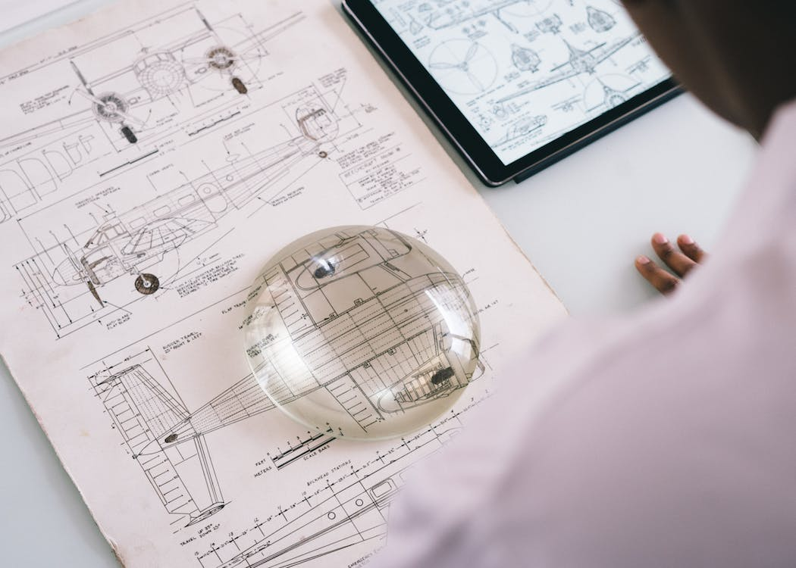
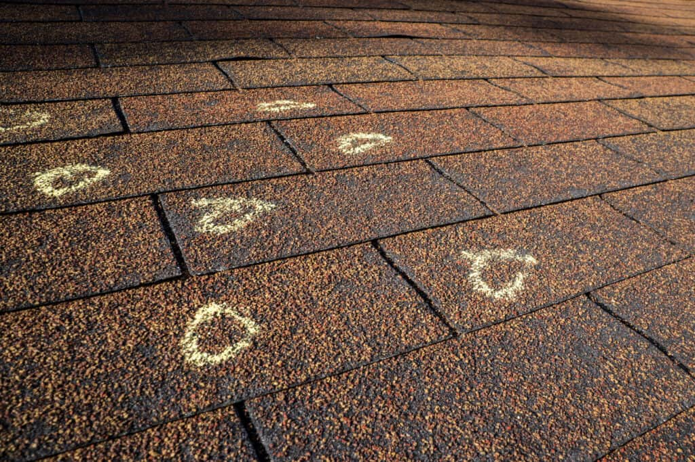
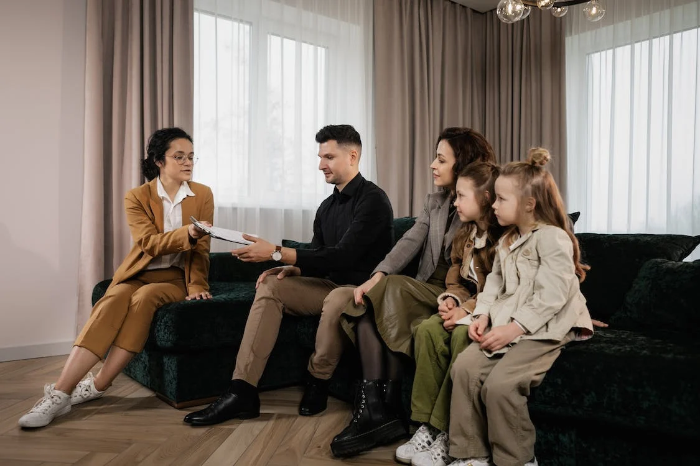
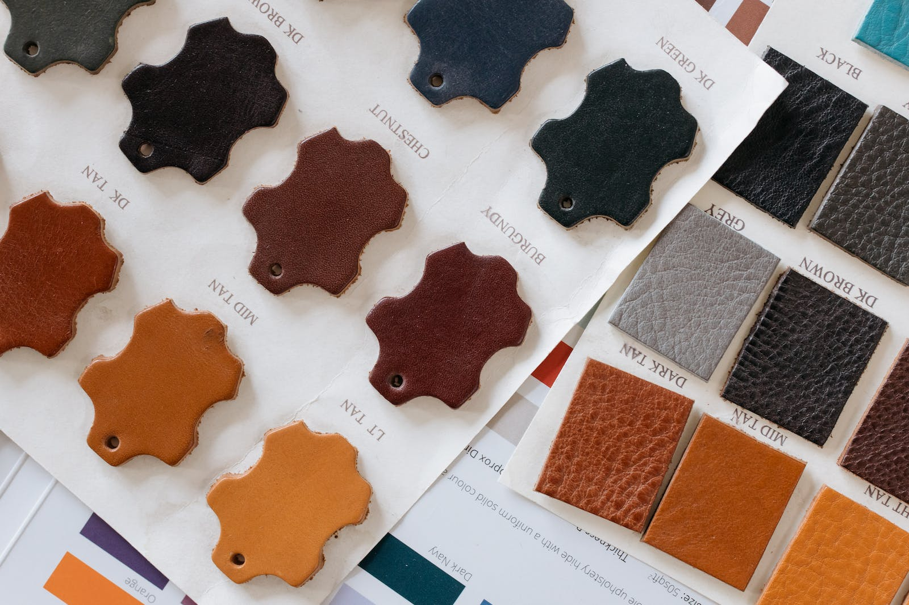
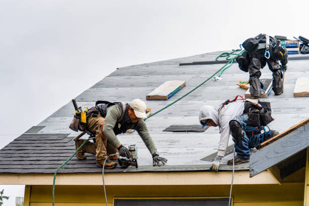
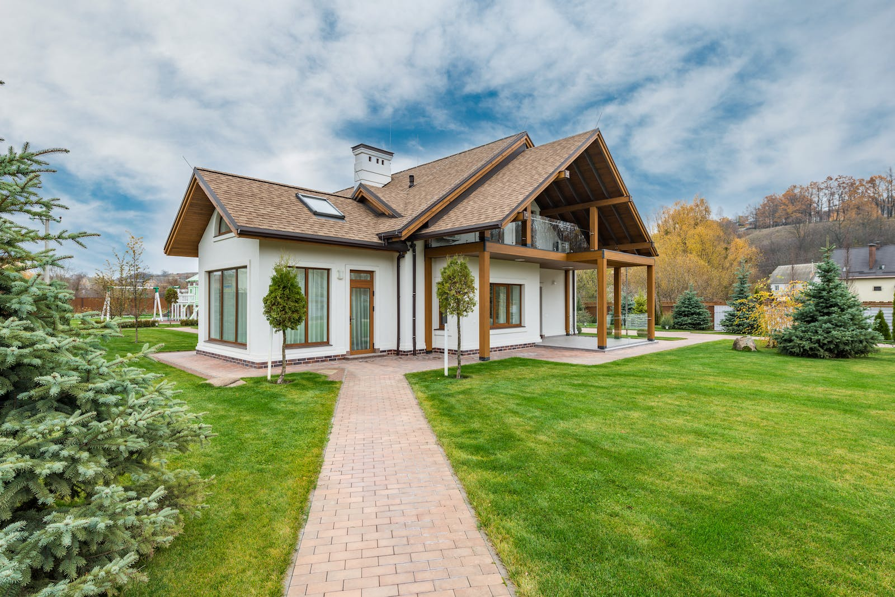

The Journey of Insurance Restoration and Claims with XYC Global
Inc
At XYC Global Inc, we've perfected the craft of insurance
restoration and construction. Our prowess extends to navigating the
complex insurance claims process, achieving an impressive 90%
success rate for claim approval. Our strength lies in our ability to
spot damages others might miss, and our strategic focus on the areas
we serve.
1. Proactive & Strategic Approach

When we approach you, it's because we see a genuine opportunity for
a successful insurance claim. We strategically focus on regions
recently impacted by weather events such as hail, especially areas
where we've had a strong record of successful claims. Simply put, we
value efficiency and respect—your time is as precious to us as ours!
2. Thorough Inspection & Agreement

After you've given us your green light with a signed contract, our
expert inspectors get to work. They will carefully examine your
property and roof, identifying damages that often go unnoticed. If
the damage is minor and unlikely to lead to an insurance claim,
we'll be upfront about it and keep you in the loop. And don't
worry, we'll check back after the next hailstorm - a regular event
in Illinois! However, if there's significant damage and we
anticipate a successful claim, we'll walk you through what comes
next. Your job? Just sit back and let us handle the details.
3. Setting up the Adjuster Meeting
If the damage is indeed claim-worthy, our Certified Public Adjuster
will step in to file your claim and arrange a meeting with the
insurance company's adjuster. This crucial meeting is when both
parties inspect the damage together. Our adjuster will be there to
ensure nothing gets overlooked and your interests are fully
represented.
4. Assisting with Your Insurance Claim

Our Certified Public Adjuster's job doesn't stop at the meeting.
They stay by your side throughout the claim process, acting as your
personal advocate, expertly steering through the intricacies of the
insurance system. While the insurance company's adjuster is focused
on their company's interests (like saving the company money by
minimizing payouts), our adjuster fights for you, ensuring you get
the coverage you rightfully deserve. In fact, it's not uncommon for
our clients to receive up to 60% more on their claims compared to
those who don't use a public adjuster. So, just relax, we've got
your back!
5. Waiting for Approval or Denial
Waiting can be stressful, but rest assured, we've got your back. If
your claim is denied, we don't just stop there. We can request a
re-evaluation, engage in mediation, arbitration, or even bring in an
umpire—a neutral third-party professional who can make a binding
decision on your claim.
6. Post-Claim Approval
Once your claim is approved, you'll typically receive your initial
insurance check within 10 to 14 days. Insurance companies usually
issue payments in two parts: the first check represents the actual
cash value (ACV) of your loss, and the second check covers the
recoverable depreciation. This two-check system ensures that the
insurance payout is used for the intended repairs.
The initial check is placed into an escrow account managed by our
Public Adjuster, a legal requirement aimed at ensuring that the
funds are used solely for the restoration work outlined in your
claim.
We'll navigate this process together, guiding you through each step
and managing all the paperwork and necessary procedures for a
seamless experience. Our goal is to help you understand your claim,
so feel free to ask if anything is unclear. We're here to help you
rebuild, starting with understanding the process.
7. Material Selection and Work Planning

With the claim approved and funds secured, we’ll schedule a meeting
to choose materials for your new roof. We’ll show you samples of
roofing shingles, siding choices, and other necessary materials.
After you've made your selections, we'll agree on a work
commencement date.
8. Roof Replacement and Restoration

Our dedicated Field Manager supervises the work to ensure
top-quality results. If additional interior repairs are needed
following the roof replacement, our team will coordinate and manage
these projects from start to finish.
9. Completion

Once all the work is done, we handle all the final paperwork.
Restoring your property doesn’t have to be a stressful endeavor.
With XYC Global Inc, you can sit back while we manage the details,
delivering excellent results at a cost-effective price. You're in
safe hands with us, and we commit to a smooth, transparent process
with no unpleasant surprises along the way.